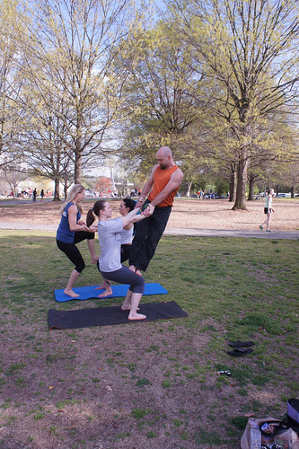
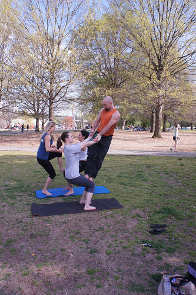
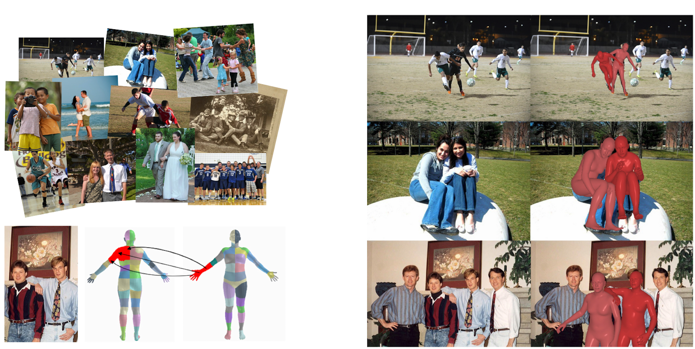

Generative Proxemics: A Prior for 3D Social Interaction from Images
- 1 MPI for Intelligent Systems, Tübingen 2 UC Berkeley
Click on image to see more results:
 

Our method takes a single image and estimates the poses of two people in close social interaction. We first train a generative model that learns the joint distribution of two interacting people. Then we use this model as prior during optimization when fitting two SMPL-X body models to detected 2D joint locations.
Abstract
Social interaction is a fundamental aspect of human behavior and communication. The way individuals position themselves in relation to others, also known as proxemics, conveys social cues and affects the dynamics of social interaction. Reconstructing such interaction from images presents challenges because of mutual occlusion and the limited availability of large training datasets. To address this, we present a novel approach that learns a prior over the 3D proxemics two people in close social interaction and demonstrate its use for single-view 3D reconstruction. We start by creating 3D training data of interacting people using image datasets with contact annotations. We then model the proxemics using a novel denoising diffusion model called BUDDI that learns the joint distribution over the poses of two people in close social interaction. Sampling from our generative proxemics model produces realistic 3D human interactions, which we validate through a perceptual study. We use BUDDI in reconstructing two people in close proximity from a single image without any contact annotation via an optimization approach that uses the diffusion model as a prior. Our approach recovers accurate and plausible 3D social interactions from noisy initial estimates, outperforming state-of-the-art methods.
Sampling meshes from BUDDI
BUDDI is a diffusion model that is trained to model the joint distribution of two people in close proximity. It directly generates SMPL-X body model parameters for two people, starting from random noise.
Comparison with BEV (left) vs. Optimization with BUDDI (right)
We compare BUDDI to BEV [SUN et al., CVPR 2022], a recent human mesh regressor that estimates the 3D pose and shape of multiple people in the world coordinate system. The predicted spacial positioning is often correct, but BEV fails to reconstruct contact and subtle detail. BUDDI addresses this problem by a two-step approach and is able to reconstruct more relistic interaction and social proxemics, also for complex poses like hugs, piggy backs, or with arms interlinked. Click on renderings to zoom.
How does BUDDI work?
BUDDI directly operates on SMPL-X parameters through a transformer backbone and is trained on a collection of SMPL-X fits to Flickr images and some data from two motion capture datasets, Hi4D and CHI3D. The model can be used to generate unconditional samples of two people in close proximity. We further train our model to take conditioning from a recent multi-person mesh regressor BEV. The estimated BEV parameters are concatenated along the token dimension with the diffused SMPL-X parameters.
The conditional model can be used as a social prior in the downstream optimization task of reconstructing 3D people in close proximity from images, without any extra annotation such as contact maps. We initialize the optimization routine with a sample from BUDDI given the BEV estimate and use standard fitting losses to minimize the 2D re-projection error, a loss term to resolve intersections between the two people, and a term to stay close to the initial sample.
To use BUDDI as a prior in optimization, we adopt the SDS loss presented in previous work like DreamFusion (L diffusion). When fitting SMPL-X to image keypoints, in each optimization iteration, we take the current estimate diffuse it and let BUDDI propose a refined estimate. The refined estimate is more likely under the true distribution of interacting people and serves as prior via an L2-Loss. This enables us to fit 3D meshes to images of closely interacting people without relying on ground-truth contact annotations at test time.
Training Data - Flickr Fits
To create training data for BUDDI, we fit SMPL-X meshes to FlickrCI3D Signatures, a dataset of images collected from Flickr with ground-truth 3D annotations indicating binary pairwise contact between regions of the human body between two people. We show sample images from this dataset with the contact map visulaized on the left and our Flickr fits on the right. See our GitHub repo for more information about the training data.